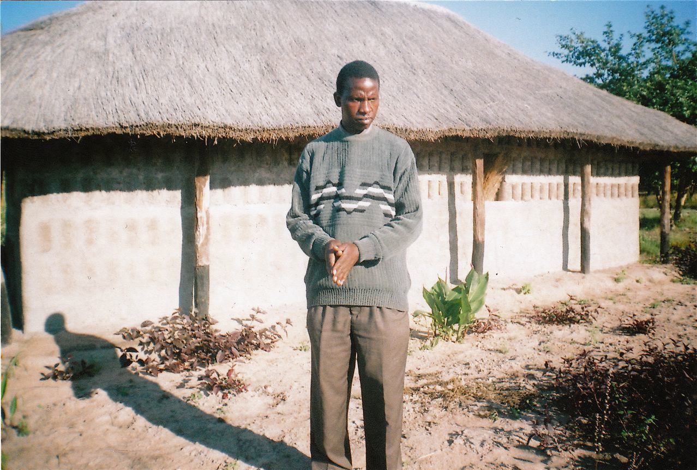
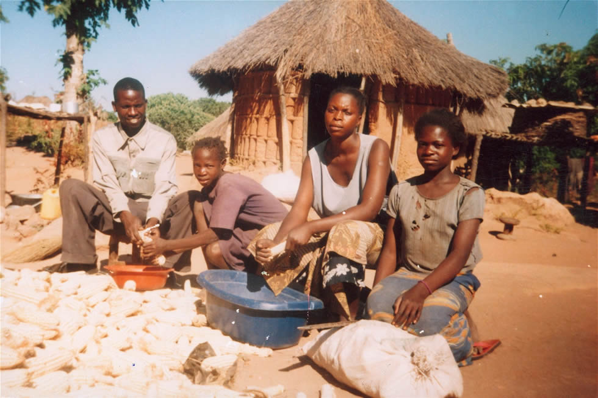
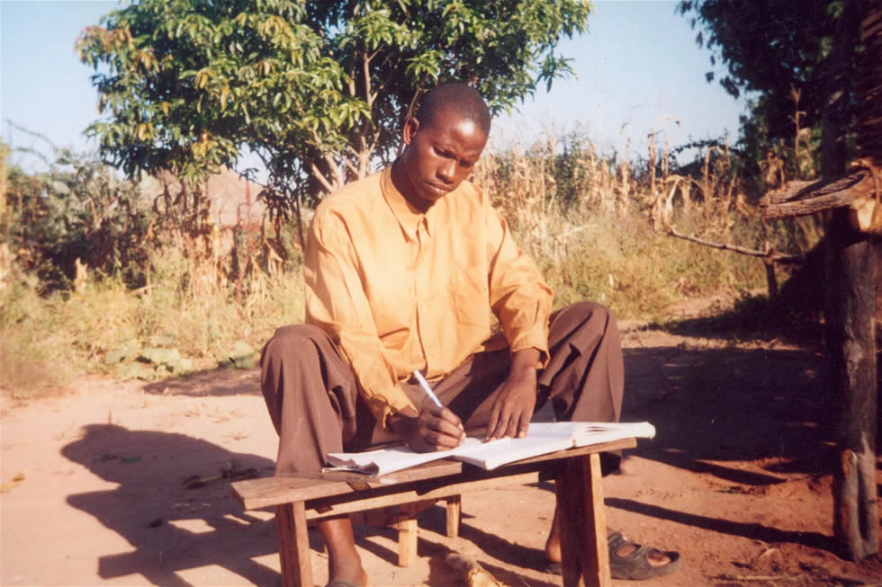
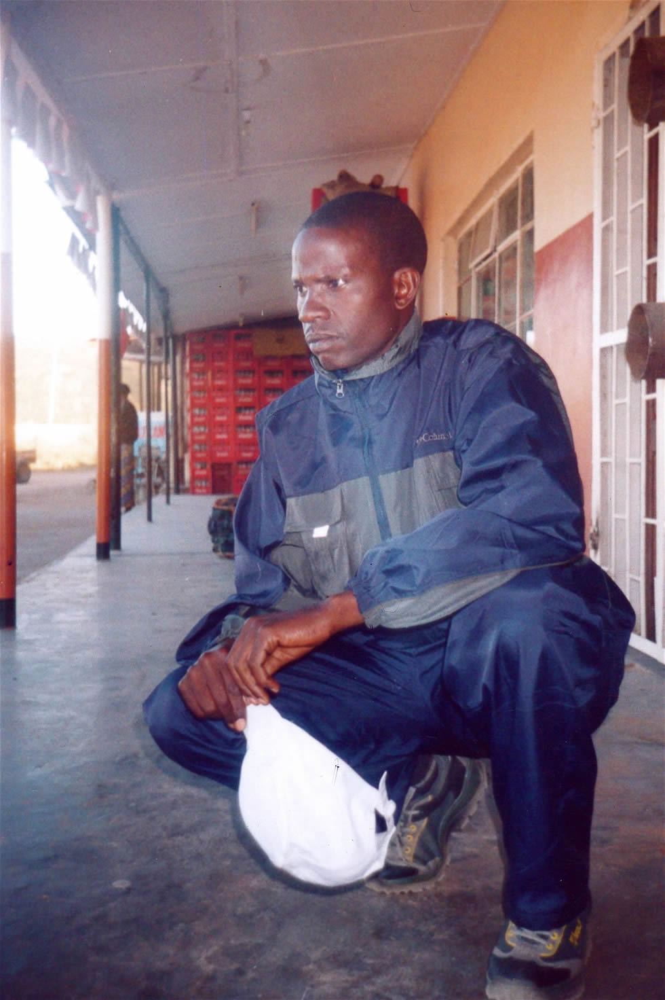

After returning to Zambia in 1992, the late Dixons life would go up and down. A promising career in Zesco ended badly, and all contact was lost.
But then finally, Dixon was able to aquire a small plot in Itezhi-Tezhi, and in the shade of a Fig Tree, he would write to his Danish family to tell them about his new life.
He also wrote about the hardships. He wrote about the pain, agony and sickness he had been through. He was now a mature man, marked by life.
|



 |